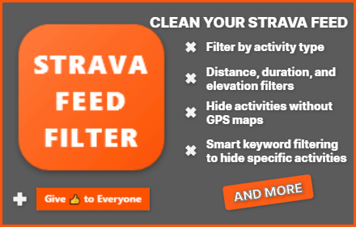

I'm Indrek
I tinker with tech to solve real-life problems, balancing full-time work, family life, and serious cycling miles with late-night coding sessions that keep ideas moving.
🎓 Code Institute Graduate
I completed the Code Institute Bootcamp, gaining hands-on experience in full-stack development. Recently Graduated
Frontend
HTML, CSS, JavaScript
Backend
Python, Django, Flask
Development
Full-Stack Solutions
🚀 Tech Enthusiast
I love building seamless, user-friendly apps. From front-end design to back-end logic — I enjoy making things that work and feel great.
Lately that means blending thoughtful UI craft, steady backend engineering, and AI-assisted vibe coding sessions that keep the focus on creative problem solving and polished user journeys.
📚 Continuous Learning
Always learning and exploring! Currently digging deeper into:
- React - Modern frontend framework
- Django REST API - Backend API development
- Advanced Git workflows - Version control mastery
- Clean architecture - Better code organization
🧩 Projects

Strava Feed Filter
Powerful Strava feed filtering tool to filter out all the noise. Available as a browser extension or userscript.
JavaScript
Tampermonkey
Chrome
Firefox
Safari (iOS)
☕ Support
If you like my work and want to support what I do, you can buy me a coffee. It helps me keep building and sharing projects.
Buy me a coffee